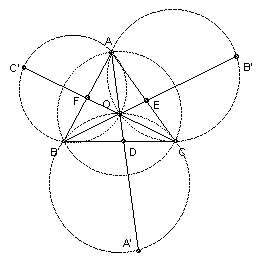

ABC is an acute-angled triangle with circumcenter O and circumradius R. The line AO meets the circumcircle of BOC again at A'. B' and C' are defined similarly. Show that OA'.OB'.OC' ≥ 8R3. When does equality occur?
Solution

Put x = area OBC, y = area OCA, z = area OAB. Then OA/OD = R/OD = (y + z)/x. Similarly, for R/OE and R/OF. Now (x + y) ≥ 2(xy)1/2, so (x + y)(y + z)(z + x) ≥ 8xyz with equality iff x = y = z. Hence R3 ≥ 8 OD.OE.OF.
Considering the circle OBA'C, we have angle OA'C = angle OBC = angle OCD. So triangles OA'C and OCD are similar. Hence OA'/OC = OC/OD, so R2/OD = OA'. Similarly for R2/OE and R2/OF. So OA'.OB'.OC' = R6/(OD.OE.OF) ≥ 8 R3, as required.
We have equality iff x = y = z. But x = (OC cos OCD)(OC sin OCD) = ½ R2 sin 2OCD = ½ R2 sin BOC. So if x = y = z, then angle BOC = angle COA = angle AOB and hence the triangle is equilateral. The converse is obviously true, so we have equality iff the triangle is equilateral.

© John Scholes
jscholes@kalva.demon.co.uk
16 Dec 2002